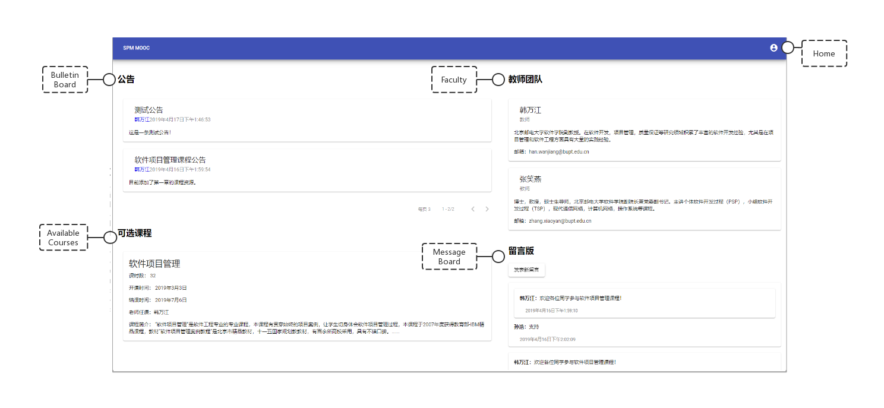
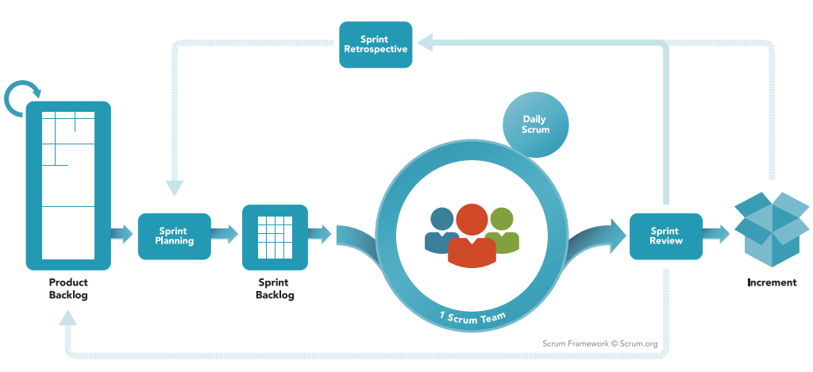
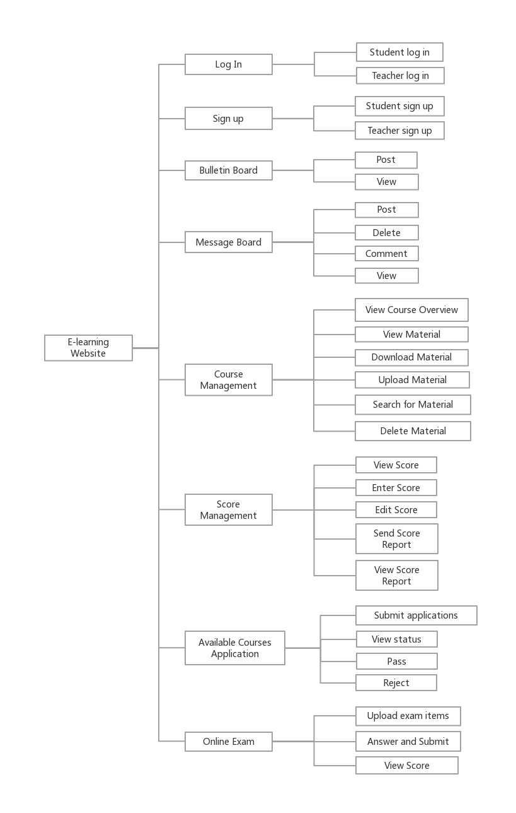
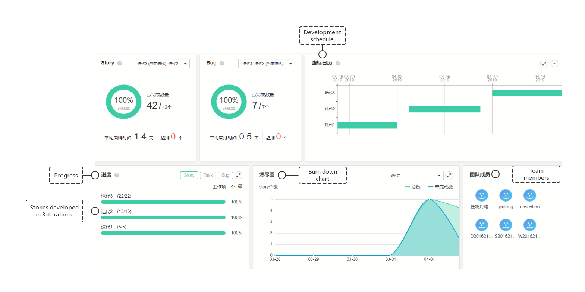
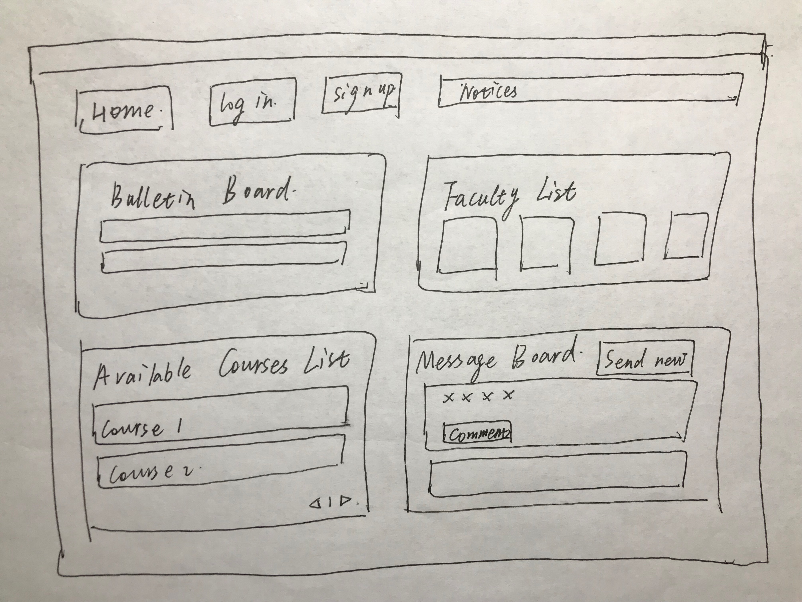
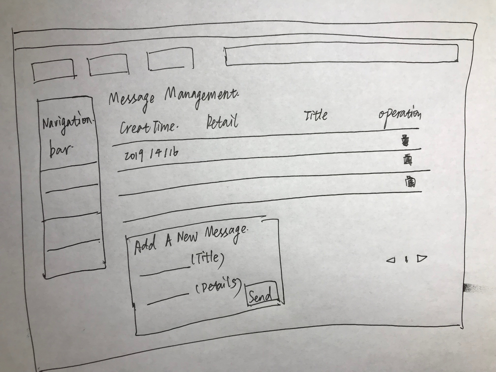
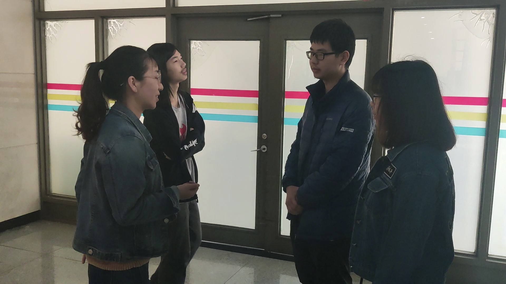

Quick Links
Quick Links
View the back-end codes &
View the front-end codesView the website demo on Youtube
OVERVIEW
We developed an e-learning website to facilitate teaching and learning activities of our school.
We completed requirement decomposition and full-stack agile development in three
iterations (3 weeks) and performed software testing.

MY ROLE
Product Designer and Developer
START UP
We started by extracting requirements from the tender specification provided by the teacher of Software Process Management course. We applied the Scrum and Agile techniques for product development.
What is scrum?
Scrum is a lightweight, iterative and incremental agile framework for managing complex work. Scrum is a feedback-driven empirical approach. Scrum teams need to frequently inspect the product being developed and how well the team is working.

Product Backlog
Scrum Product Backlog is simply a list of all things that need to be done within the project. These items are presented in the form of user stories.

Plan

First-draft design


Coding
We adopted a client-server architecture and chose Angular as the front-end framework. With Angular components, our application can achieve good componentization and reuse. Furthermore, We created RESTful APIs for front-end and back-end interactions.
7416 lines
5076 lines
1283 lines
428 lines
Original code sample:
import buptspirit.spm.exception.ServiceError;
import buptspirit.spm.exception.ServiceException;
import buptspirit.spm.message.MessageMapper;
import buptspirit.spm.message.SelectedCourseEditingMessage;
import buptspirit.spm.message.SelectedCourseMessage;
import buptspirit.spm.message.SessionMessage;
import buptspirit.spm.persistence.entity.SelectedCourseEntity;
import buptspirit.spm.persistence.facade.CourseFacade;
import buptspirit.spm.persistence.facade.SelectedCourseFacade;
import buptspirit.spm.rest.filter.Role;
import org.apache.logging.log4j.Logger;
import javax.inject.Inject;
import java.math.BigDecimal;
import java.util.List;
import java.util.stream.Collectors;
import static buptspirit.spm.persistence.JpaUtility.transactional;
public class SelectedCourseLogic {
@Inject
private SelectedCourseFacade selectedCourseFacade;
@Inject
private MessageMapper messageMapper;
@Inject
private Logger logger;
@Inject
private CourseFacade courseFacade;
public SelectedCourseMessage getScore(int studentId, int courseId) {
SelectedCourseEntity selectedCourseEntity = transactional(
em -> selectedCourseFacade.findByStudentUserIdAndCourseId(em, studentId, courseId),
"failed to find selected course"
);
return transactional(
em -> messageMapper.intoScoreMessage(em, selectedCourseEntity),
"failed to convert course to message"
);
}
public List<SelectedCourseMessage> getStudentSelectedCourses(String username, SessionMessage sessionMessage) throws ServiceException {
if (!username.equals(sessionMessage.getUserInfo().getUsername()) ||
!sessionMessage.getUserInfo().getRole().equals(Role.Student.getName()))
throw ServiceError.FORBIDDEN.toException();
return transactional(
em -> selectedCourseFacade.findByStudentId(em, sessionMessage.getUserInfo().getId()).stream().map(
score -> messageMapper.intoScoreMessage(em, score)
).collect(Collectors.toList()),
"failed to find selected courses"
);
}
public List<SelectedCourseMessage> getTeacherSelectedCourses(int courseId, String username, SessionMessage sessionMessage) throws ServiceException {
boolean allow = transactional(
em -> courseFacade.find(em, courseId).getTeacherUserId() == sessionMessage.getUserInfo().getId(),
"failed to find this course"
);
if (!username.equals(sessionMessage.getUserInfo().getUsername()) ||
!sessionMessage.getUserInfo().getRole().equals(Role.Teacher.getName()) || !allow) throw ServiceError.FORBIDDEN.toException();
return transactional(
em -> selectedCourseFacade.findByCourseId(em, courseId).stream().map(
score -> messageMapper.intoScoreMessage(em, score)
).collect(Collectors.toList()),
"failed to find selected courses"
);
}
public SelectedCourseMessage editSelectedCourse(SelectedCourseEditingMessage selectedCourseEditingMessage,
int studentUserId, int courseId,
SessionMessage sessionMessage, String username) throws ServiceException {
/* Verify whether a user has permission to enter grades */
boolean allow = transactional(
em -> courseFacade.find(em, courseId).getTeacherUserId() == sessionMessage.getUserInfo().getId(),
"failed to find this course"
);
if (!username.equals(sessionMessage.getUserInfo().getUsername()) ||
!sessionMessage.getUserInfo().getRole().equals(Role.Teacher.getName()) || !allow)
throw ServiceError.FORBIDDEN.toException();
SelectedCourseEntity selectedCourseEntity = transactional(
em -> selectedCourseFacade.findByStudentUserIdAndCourseId(em, studentUserId, courseId),
"failed to find selected courses"
);
/* Calculate the total score and store it in the database */
selectedCourseEntity.setAvgOnlineScore(selectedCourseEditingMessage.getAvgOnlineScore());
selectedCourseEntity.setMidScore(selectedCourseEditingMessage.getMidScore());
selectedCourseEntity.setFinalScore(selectedCourseEditingMessage.getFinalScore());
BigDecimal tempAvgOnlineScore = selectedCourseEntity.getAvgOnlineScore().multiply(BigDecimal.valueOf(3, 1));
BigDecimal tempMidScore = selectedCourseEntity.getMidScore().multiply(BigDecimal.valueOf(1, 1));
BigDecimal tempFinalScore = selectedCourseEntity.getFinalScore().multiply(BigDecimal.valueOf(6, 1));
BigDecimal totalScore = tempFinalScore.add(tempAvgOnlineScore.add(tempMidScore)).setScale(1, BigDecimal.ROUND_HALF_DOWN);
selectedCourseEntity.setTotalScore(totalScore);
return transactional(
em -> {
selectedCourseFacade.edit(em, selectedCourseEntity);
return messageMapper.intoScoreMessage(em, selectedCourseEntity);
},
"failed to add selected course"
);
}
}
Stand-up Meetings
I conducted daily scrum meetings to keep track of daily tasks and plan activities for the next 24 hours.

Testing
We performed a series of software testing techniques, including unit testing, interface testing, system testing and regression testing using auto testing tools.